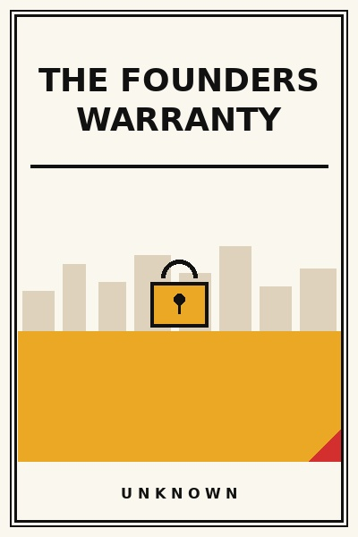

The Founders Warranty
What happens when the charismatic face leaves the building.
READ FULL BREAKDOWN (FREE) →The Big Idea
A brand is only as strong as what happens when the founder is not in the room. Institutionalizing founder ethos is the ultimate leadership test.
Key Lessons
The Charisma Trap
Businesses built purely around the founder's personal charisma evaporate the moment succession occurs.
The Nordstrom Rule
Empowering retail employees to accept tire returns at a department store created a legendary warranty culture.
Codifying the Unwritten
The unspoken standards the founder enforces by eye must be articulated into clear operational checklists.
Hiring for Soul Alignment
Skills can be taught in thirty days; a deep respect for customer service must be present at hiring.
The Stress Test
Step away from operational Slack channels and email for two weeks to see which systems break first.
Passing the Baton
Succession requires giving the incoming leader full authority to make mistakes without founder interference.
The Uncompromised Promise
No matter how large the enterprise grows, the founding warranty of quality must remain sacrosanct.
The Living Monument
The greatest legacy is not your name carved in marble; it is an institution that continues doing honest work for centuries.
The Graveyard Proves It
Where this advice breaks: Where this advice breaks: rigid institutionalization can prevent successors from adapting to fresh cultural and technological realities.
Read the autopsy: mallya-kingfisher →